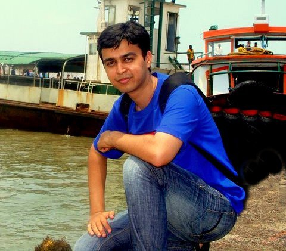
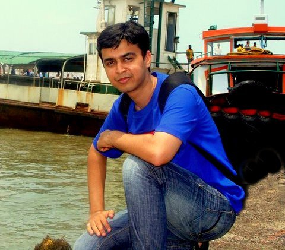

About Me


Well, I am Mustafa Kachwala. I have done my Bachelor's in Instrumentation and Control Engg and working as a developer in TCS from last one year.
My hobbies are photography and reading. I love to read biographies. Some of the must-reads recommended by me are:
iWOZ by Steve Wozniak
The Man who Loved only Numbers by Paul Hoffman
The Girl with a Dragon Tattoo by steig Larsson